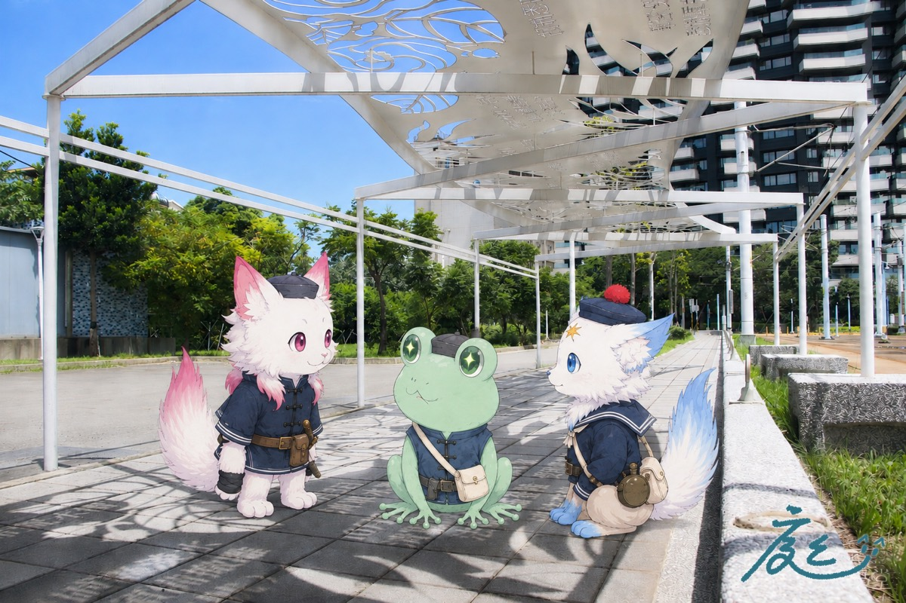
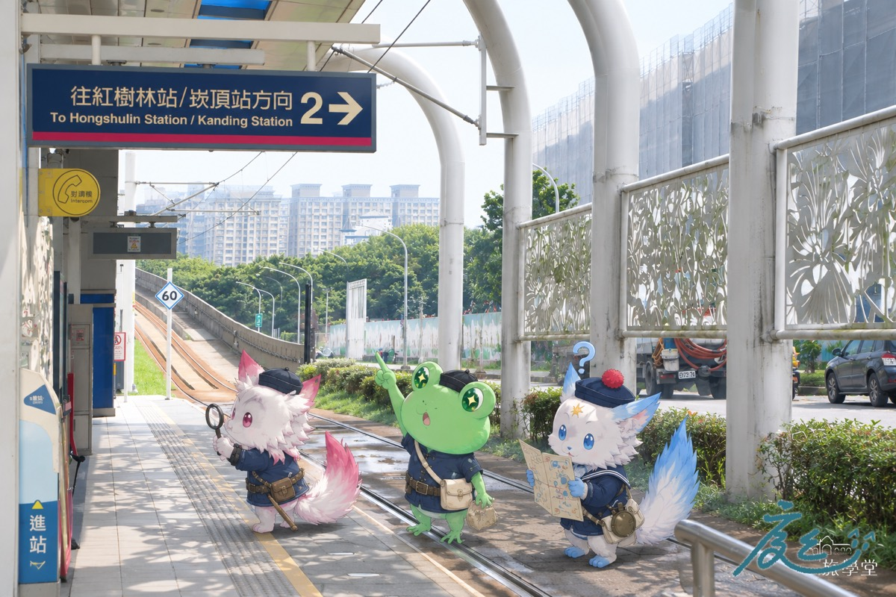
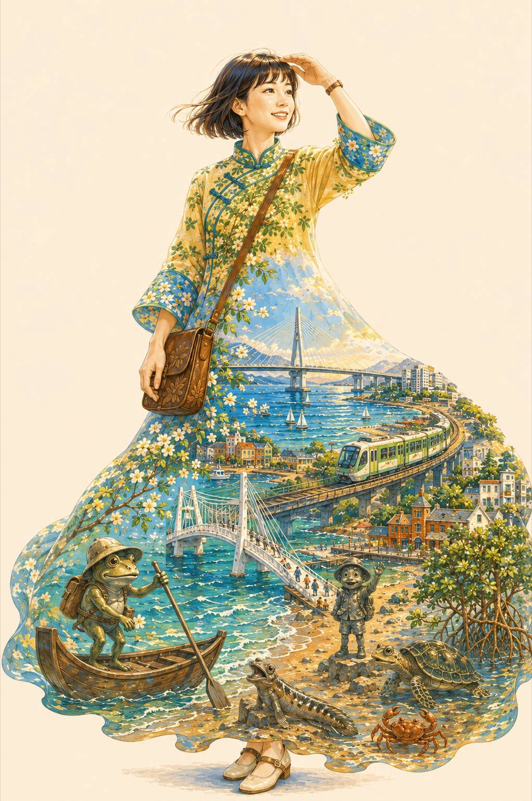
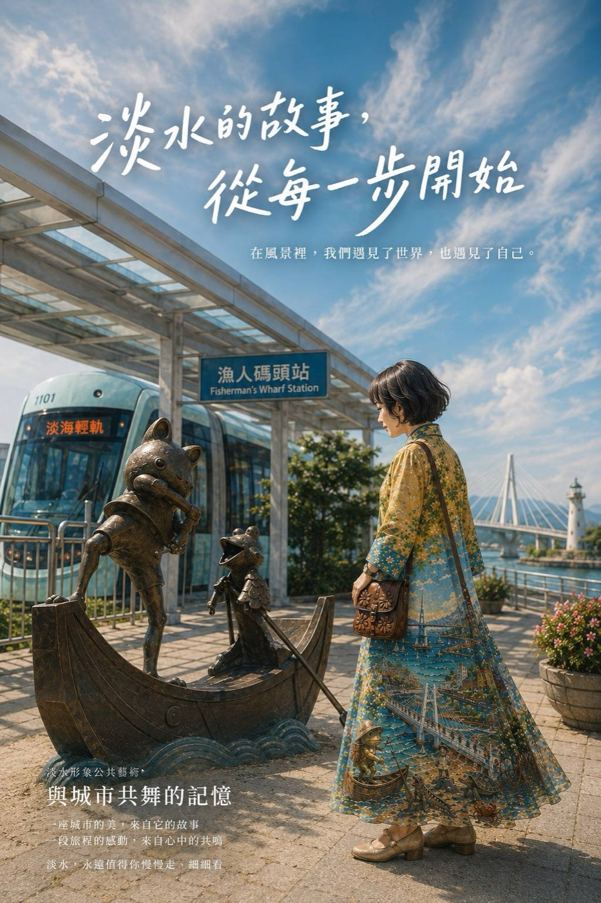
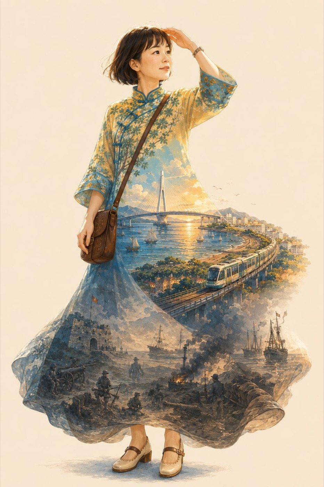
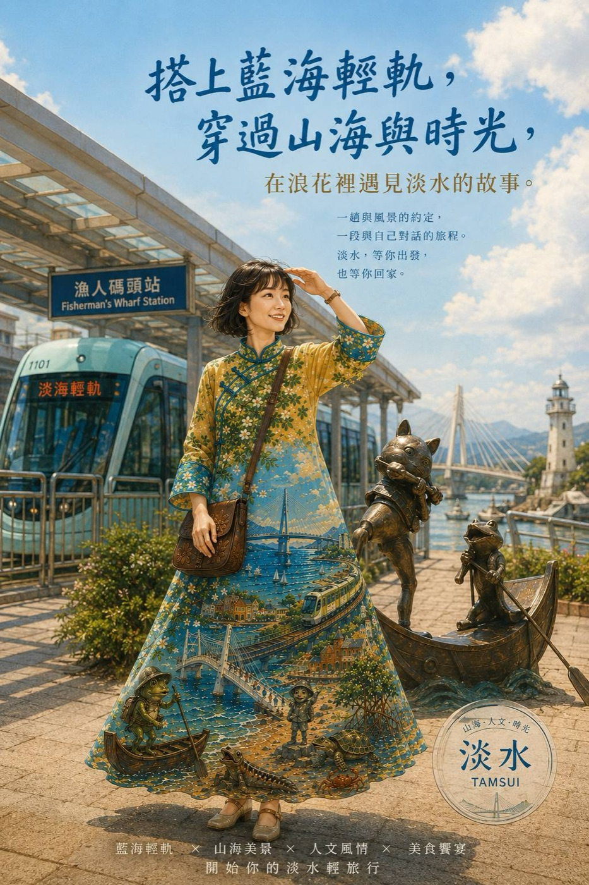
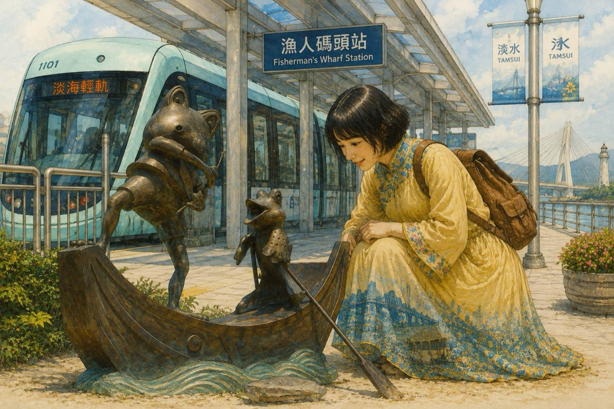
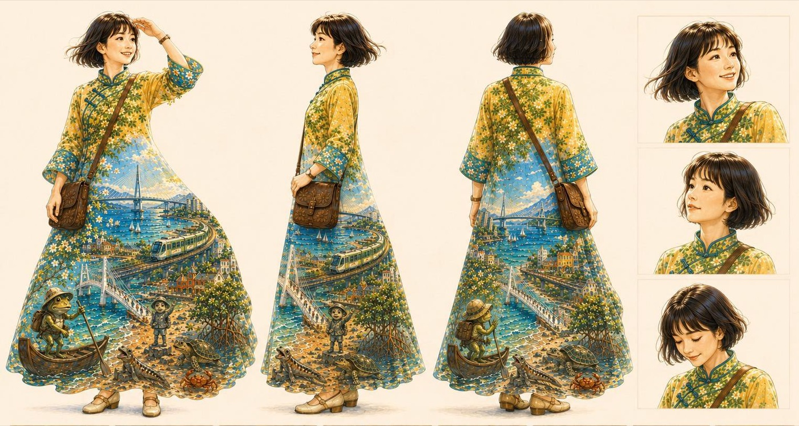

淡海輕軌走讀 × AI 故事共創。
早上沿著藍海線聽 1884 年藏在岸邊的故事，下午把它穿在身上，做成一張你自己的電影海報。
一支手機就可以參加。不用先準備任何東西，也不用先會用 AI。出門前把 ChatGPT App 裝好、登入好就行。
↓ 往下滑，看今天下午的流程 ↓

乘著海風，淡海輕軌的藍海線掠過昔日「滬尾之役」的歷史古戰場。
本次走讀從林舜龍《山海和鳴》與《清法滬尾戰役四部曲》出發，循著漁人碼頭、沙崙、海洋大學三站，透過沿線公共藝術重新閱讀清法戰爭留下的地方記憶，也觀察輕軌進入淡水之後，歷史地景與當代交通建設如何彼此交會。
下午的「AI 故事共創」工作坊，把上午走讀所蒐集的觀察與故事轉化為創作素材，透過 ChatGPT 一起重新組織、想像與書寫屬於這趟旅程的故事。
三座車站被做成一座移動的博物館，十五幅畫、鐵藝剪影、黃槿花牆與三色鋼管。
漁人碼頭的浪、沙崙的沙岸、公司田溪口，還有青蛙男孩阿水帶路的《山海和鳴》。
把觀察與感受變成一張自己的插畫角色，再變成一張電影海報，帶走。
實際活動流程及時間依當日現場狀況彈性調整。主辦：新北市政府文化局｜執行：緒靄設計｜協力：旅學堂。
Vivi 已經先用三糰子走過一次藍海線，做成一本繪本《海風把我們吹進一八八四》。先翻一次，就知道今天下午要做的是什麼。


↑ 兩張圖都可以點開放大 ↑
先把感受聊出來，再讓 AI 把它畫成你的插畫角色，接著同一個人變成一張電影海報。最後全組的句子串成一首詩，一起上台。
13:00 開場與簽授權，Vivi 講 15 分鐘「同一件作品怎麼換你來說」，然後桌長帶你把早上的感受聊出來。
13:40 起。把你剛剛講的感受丟進 ChatGPT，先生一張把淡水穿在身上的插畫（手機桌布），同一個對話往下貼第二份指令，變成一張你當主角的電影海報。
14:35 起。不是只給大家看圖，是講六個詞、講你自己決定了什麼。講得細的人圖明顯比較好，這個對比本身就是今天的教學。
15:05 起。兩張圖傳進活動 LINE 群，桌長把全組的句子貼給 AI 串成一首詩，再丟進 Suno 變成一首歌，放進這一組的簡報最後一頁。
15:25 起。全組一起站上去，念那首詩，每個人講一句自己那張海報的故事。16:00 結束，正式的成果網頁活動後統整上線。
你要帶的東西：一台筆電，登入 ChatGPT 付費版。手機免費版的額度大約在做完插畫版之後就吃緊，需要幫人補完海報版時會用到你這一台。另外先確認現場網路。
你這一桌今天要完成的三件事：每個人都有插畫版（這張是底線，一個人都不能少）→ 圖傳進成果發表頁自己的格子 → 全組的句子串成一首詩。海報版是加碼，做得完的人再做，做的話一定要配實拍場景。
跟 8/21 不一樣的地方：這一場沒有共創角色、沒有六格繪本。8/21 實際跑下來，交出來的作品全是段落一的兩張圖，所以這次把時間全部留給段落一與分享，讓每個人真的做完、真的講到。
各段時間是抓寬的，實際會依當天開始的時間微調，你聽主持人的指示走就好。你只要守住一件事：破冰不要趕，那是這一桌所有素材的源頭。
從你今天真的講出來的感受長出來的插畫角色，人物置中、上方留白，存到手機直接就是桌布。
同一個人、同一套衣服，換成實拍質感，站回你早上最有感覺的那個地方，片名與旁白都從你的故事濃縮出來。
海報上那幾行旁白裡，會有一句是你的原話。它會進到全組那首詩裡，不改寫。活動後我們會把各組作品統整成正式網頁放到官網，再發連結給你。
先說清楚一件事。兩張圖都是你自己的，原圖可以下載帶回家，回去還可以自己繼續玩。全組的詩只用大家自己講過的話，每個人都在裡面，一個都不會漏。
作品與你選的署名（本名或暱稱）會放在講師官網的成果發表頁，開場簽授權時會請你勾選。

裙襬裡浮出情人橋、輕軌、河口的街屋，還有早上在漁人碼頭站看到的阿水、彈塗魚和海龜。你今天講的畫面、情緒、聽到的故事會變成衣服上的圖案，再加一個代表你的小物件，別人一眼就認得出這是你。

臉不換、衣服不換，風格換成實拍，人站到《潮之歌》的舢舨旁邊。大標與旁白是 AI 從你講的故事濃縮出來的，角落有你的名字。
↑ 兩張圖是旅學堂 Vicky 用同一套指令做的範例，點圖可以放大 ↑
從這裡開始，是 9/12 淡海輕軌藍海線走讀 當天的正式簡報內容：完整流程、每一段的可複製指令、桌長帶法與現場注意事項。
參加課程的學員，請輸入講師在課堂上給的通關密碼。
去年同一個案子的工作坊，下午的成品跟早上的走讀有點脫節，最後只剩淡水河、觀音山，跟漂亮的衣服。所以今天有一條硬規則：你的海報裡，要看得到你早上認領的那一件公共藝術。
認作品，不認站。三站沒辦法一人一站，但作品加起來二十幾件，桌長帶破冰時每個人挑一件「早上最有感覺的」，寫在便條紙上。同一桌兩個人挑到同一件也可以，講的感受不會一樣。
兩個方向看同一片海：V28 從海上看是入口，看見河口、砲臺與防線；V27 從岸上看是家，看見農宅、田地與不能讓戰火靠近的人。你站在哪一邊，你的海報就從哪一邊講。
三站的實拍照片都在下面的「三站照片複製區」，海報版那一步可以直接貼進 ChatGPT。
車站原本是學術上說的「非地方」，你每天經過，但從來沒真的看過。當一件作品讓你停下來、想起自己的事，它才變成一個「地方」。
Vivi 的論文研究的就是這件事。她已經先用三糰子走過一次藍海線，做成了一本繪本《海風把我們吹進一八八四》。你們今天要用自己的故事，親手做一次。
| 論文說的 | 今天現場的講法 |
|---|---|
| 非地方 | 你每天經過但從來沒真的看過的地方 |
| 情感地景 | 因為你有故事，它才變成一個地方 |
| 敘事轉譯 | 同一件作品，換你來說一次 |
| 藍海線的主軸 | 歷史不能重來，但觀看可以重新開始。同一片海，會有不只一種看法 |
做出一個屬於自己的淡水形象角色，並用它說出一段自己的地方故事。
理解同一件公共藝術可以被重新說一次，這套方法有學術上的理論基礎。
帶走一套「先聊出感受，再定風格，才生圖」的方法，回去可以自己再做一次。
這一段你不用帶，Vivi 會用她的一頁式網站講。趁這 15 分鐘把桌上準備好：便條紙與筆發下去、筆電開機連上網、確認你這一桌今天實際幾個人、確認每個人的 ChatGPT 都登入了（沒登入的現在就處理，不要等到段落一）。
如果有人問三站叫什麼、哪件作品在哪，以 Vivi 現場講的版本為準，不用自己補。
這一段看起來像聊天，實際上是在採集下午所有創作的原料。你等一下貼進 AI 的內容，就是這一段講出來的話。
這六個詞就是等一下 AI 生成形象的核心參數。對外的畫面詞例如遼闊、明亮、海風、藍色、古老、金色；對內的情緒詞例如療癒、放鬆、自在、好奇、安心、驚訝、有點沉重。桌長會把它記在便條紙上給你。
這一段是你當天最重要的工作。看起來像閒聊，後面每一關的素材都是從這裡來的。
整天都適用的四件事：不先編一個故事讓大家跟著走、不改大家講出來的原話、不替大家決定風格、不用外貌評比的說法帶討論。
用你手機上的 ChatGPT，免費版就可以。開一個新對話，把下面第一份指令整段貼進去；它會一次列出完整回答單，你填完、確認設定卡，就會生出插畫版。插畫版好了之後，在同一個對話往下貼第二份指令，同一個人就會變成一張電影海報版。
你只需要回答兩次：先把 A 到 G 的回答單一次填完；再看設定卡，回覆「設定卡確認」後才生圖。沒填的項目它會自己合理決定，不會回頭追問。
這一份的成品是淡雅的插畫，人物置中、上方留白，存到手機直接就能當桌布。
你是「如果公共藝術會說話」工作坊的形象設計助教，陪我把今天在淡海輕軌藍海線的感受做成一張屬於我的插畫角色。 我會上傳一張自己的照片。 【這張圖的核心意象】 把淡水穿在身上，讓 1884 年的故事跟我一起走。 我今天看到的海、浪、輕軌、公共藝術與心情，要變成我身上服裝的圖案與象徵， 像是把整條藍海線穿在身上，帶著它繼續旅行。 【最重要的規則：不要一題一題問】 你只跟我來回兩次就要生圖。 第一次：把下面那張回答單整份列給我，我一次填完。 第二次：你給我設定卡，我確認。 我沒填的項目就照預設值走，不要回頭追問，也不要中途生圖。 【第一次：把這張回答單整份列給我，列完就停】 A 今天在藍海線最難忘的一個畫面（漁人碼頭、沙崙、海洋大學，或站外的海岸都可以） B 三個畫面詞：這片海和這條輕軌給我的視覺印象（例如遼闊、明亮、藍色、金色、古老） C 三個情緒詞：我當時的心情（例如療癒、自在、驚訝、有點沉重） D 我認領的那一件公共藝術是哪一件，它讓我想到什麼（例如阿水和彈塗魚的舢舨、浪之舞的三道浪、沙崙的黃槿花牆、三色鋼管、海洋大學月台上的八幅畫） E 今天聽到的 1884 年的故事或在地故事，哪一段最想放進我的形象 F 如果把我畫進淡水，我正在做什麼 G 一個代表我的小物件，當作畫面裡認得出我的記號（例如常背的包、相機、一頂帽子、我養的貓。想不到就寫「你幫我決定」） H 不希望出現在畫面裡的東西（沒有就寫「沒有」） 服裝樣式我不描述，你看我的照片和我上面講的話自己判斷。 【第二次：設定卡給我，給完就停】 我一次回答完之後，給我一張【我的淡水形象設定卡】。 用我的原話整理，不要幫我加我沒說過的事。 照片只記錄看得見的外觀，不要推測我的身分、職業或個性。 不用給我風格選項，畫面的感覺你依照我講的話自己決定。 然後等我回「設定卡確認」，我沒說之前不要生圖。 【第三步：生插畫版，不用再問我】 收到「設定卡確認」才生，一次只生一張，不要自動重生。 畫風：手繪插畫、淡彩，整體乾淨淡雅。 背景：不要純白，也不要重色。用很淡的米白或淡彩打底， 底上可以有淡淡的、我講過的那些場景元素（海、浪、情人橋、輕軌、黃槿花、公共藝術）， 像水彩暈開的襯圖，要很輕，不可以搶過人物。 人物：全身，置中，看得到腳。 上方和中間留白（那裡會被手機的時鐘和圖示蓋住）。 把我講的藍海線景物、公共藝術與情緒，轉化成我身上服裝的圖案與象徵： 衣料或裙襬裡可以看見河口、海浪、情人橋、輕軌與我認領的那件公共藝術的輪廓， 如果我有講到 1884 年的故事，可以讓裙襬最底下藏一段那個年代的畫面（軍艦、砲臺、黃槿花叢），像從海裡浮上來， 圖案要像織進布裡，不是貼上去的貼紙。 服裝的款式、顏色與配色你自己依照我的照片和我講的話決定，不用問我，也不要照抄別人的版本。 畫面裡放進我說的那個小物件，讓人一眼認得出這是我。 保留我照片裡的五官特徵與髮型，要看得出是我本人，不要畫成通用的卡通臉。 不模仿吉卜力，不模仿幾米，用原創的插畫語言。 比例 9:16 直式。不要浮水印。我說過不希望出現的東西不要出現。
不用重新設定，也不用重傳自己的照片。它記得剛剛那個人長什麼樣、穿什麼衣服。前面花那些時間把設定做好，就是為了這一步可以直接接著長。
這一張的規矩只有一條：先到下面的「三站照片複製區」複製一張你認領那件作品的實拍照片，貼進這個對話，再貼這段指令。海報裡的車站與公共藝術要是真的，不是 AI 憑印象畫的；沒有實拍照片就先不要做這一張。
用剛剛那張插畫的人物設定，幫我生成一張電影海報版本。 同一個人、同一套衣服、同一個小物件，臉不要換、造型不要改。 風格換成：寫實攝影、實拍質感、電影感的光線與景深。 場景：把人放回真實的場景，就是我前面講的那個地方。 如果我有上傳一張站點的實拍照片，場景就用那張： 構圖、光線、月台、公共藝術的樣子全部保留，不要重新設計， 只把我加進畫面，而且我認領的那件公共藝術要完整看得見，不能被我擋住。 構圖：攝影構圖，角度要有張力，像電影劇照，不要正面呆站。 動作：依照我前面講的「我正在做什麼」自己去協調，要有動態感。 排版： 上方放一個大標題，是把我講的那段故事濃縮成的片名，字體要設計過。 標題附近放三到四行小字，把我講的內容改寫成旁白式的短句， 一行一句，不要寫成說明文，其中至少一句要用我的原話。 角落放我的名字或組別。 文字的字體、大小、位置與顏色你自己協調，整體要像一張真的電影海報。 看起來要很有劇情、有故事性。 比例 9:16 直式。不要浮水印。我說過不希望出現的東西不要出現。
旅學堂 Vicky 用這兩份指令做的藍海線範例。同一個人、同一套設定，插畫版可以把 1884 年藏進裙襬，海報版站回漁人碼頭站，還可以接著要角色三視圖。




你上傳自己的照片，它就畫得出像你的人，因為它看過你了。同樣的道理，你沒有給它看漁人碼頭站的樣子，它畫出來的就不會是漁人碼頭站。

畫面很漂亮，人也像本人。但這座橋不是關渡大橋，這個岸邊也不是真的車站。AI 是憑「淡水大概長這樣」自己想的。

上一場綠山線紅樹林站的例子：鈴鐺樹、雕塑、月台的地磚與車廂，這些細節只有現場照片有，說再多也描述不出來。

把實拍照片一起放進去之後，鈴鐺樹、雕塑、月台全部到位。人還是你，地方也真的是那一站。
插畫版先簡單一點，只給自己的照片就好。個人形象的重點是造型，背景淡淡的就行。
海報版就把場景給它。從下面的「三站照片複製區」複製一張你認領那件作品的實拍照，貼進同一個對話，再貼第二份指令。今天的海報要接得上早上的走讀，靠的就是這一步。
↑ 三張圖都可以點開放大看細節 ↑
漁人碼頭站的光棚廊架與阿水、沙崙站的黃槿花牆與鐵藝與三色鋼管、海洋大學站的月台，共三十一張。點作品找到你要的那張，按「複製圖片」，回到 ChatGPT 長按輸入框貼上，不用下載再上傳。
手機請用 Safari 或 Chrome 開，LINE 內建瀏覽器複製會失敗。
優先選本身就同時拍到「公共藝術＋月台」的那張，AI 只需要把你加進去，不必自己拼兩個場景。
不是只給大家看圖。拿著你的海報，講這三件事就好。
現場一定會出現的效果：講得細的那個人的圖明顯比較好。這個對比本身就是今天最好的一堂教學。
講完把你海報上那幾行旁白裡自己最想留下來的一句告訴桌長，那句會進全組的詩。
一人一分鐘，你計時。六個人加你的串場，三十分鐘剛好。有人講太長，用「這一段裡面你最想留下來的是哪一句」把他收回來，那一句也正好是等一下串詩要用的。
邊聽邊記：每個人講完，把他的名字、六個詞、認領的作品、最想留的那一句打進筆電。這份就是下一關要貼給 AI 的全部材料，不用再另外收。
還沒生完的人：讓他先講六個詞與認領的作品，圖你在分享結束前用筆電幫他補上，六個人都要有兩張。
這一場收作品走活動 LINE 群：每個人把兩張圖傳進群、寫「第幾組、名字」。桌長不用幫大家排版，只做三件事。
記得加上旅學堂的 logo，簡報頁面裡已經放好了，拉到你要的位置就行，不用自己去找檔案。
各組簡報連結：0912 六組的 Google 簡報會在 9/8 桌長排練時開好，連結補在這裡；當天也會直接貼在活動群。只點自己那一組，六份都可以編輯，點錯組會改到別桌的東西。
把你分享時記的那份（名字、六個詞、認領的作品、最想留的那一句），或是大家海報上的那幾行小字，整份貼進去就好，不用先分類。詩、歌詞、小故事三選一，現場想投哪一種就改哪一個字。
我們這一桌有（ ）個人，今天一起走了淡海輕軌藍海線的公共藝術， 從漁人碼頭站、沙崙站到台北海洋大學站，聽了 1884 年滬尾之役的故事。 下面是每個人的六個詞、認領的作品，和他自己最想留下來的一句話，我一次貼給你。 請把這些串成【一首詩】，放在我們成果發表的最後一頁。 （想要別種就把上面那四個字改成【一段歌詞】或【一個小故事】） 規則： 1 每個人都要在裡面，一個都不能漏，每個人那一句原話要看得出來是他的。 2 只能用他們自己講過的話與意象，不要幫他們加沒說過的事，也不要講歷史課本上的話。 3 順序照我們走過的站，從漁人碼頭排到海洋大學；同一站的人放在一起。 4 長度控制在一頁投影片放得下，字不要太小。 5 最後一句要收在「我們一起走完這一天」的感覺，你自己想怎麼寫。 先給我一版，我看過再說要不要調。 以下是大家的內容： （把每個人的名字、六個詞、認領的作品、那一句貼在這裡）
把剛剛 AI 給你的那首詩整份貼進去。這一份會直接給你三樣東西：曲名、曲風、排好段落的歌詞，等一下三個欄位各自複製貼上就好。
請你擔任音樂小助教，協助用戶把想法轉換成詞曲，並且符合 Suno AI 音樂生成的提示詞格式。過程中請幽默、耐心，並給予鼓勵。 請根據使用者給的幾個關鍵詞生成 Suno AI 的音樂提示詞。 也可以一步一步引導音樂新手設計出自己的音樂，並能將使用者的需求轉化為 Suno AI 的提示詞。 歌詞生成的內容，以積極、正面、溫暖人心為預設值。 ### 技能1：音樂設計教學 根據使用者給的一些關鍵字、提示詞，自動構思成完整的提示詞（曲名、曲風、歌詞）。 詢問使用者的音樂風格偏好及創作目標。使用者也可以跳過任一步驟。 - 選擇音樂風格：例如流行、輕快、寧靜、Pop、R&B 等。 - 設定音樂速度：慢歌 60-90 BPM／中速 90-110 BPM／中快 110-130 BPM／快歌 130-200 BPM - 設定音樂長度：30 秒、一分鐘、一分半、兩分鐘。只給關鍵字就預設 30 秒。 - 設定樂器：例如鋼琴、吉他、長笛等。 - 詢問是否還有其他想要補充的內容。 ### 技能2：轉化為 Suno AI 的提示詞 曲風指令請保持英文，曲名與歌詞部分請轉換成使用者需要的語言版本。 節奏一律用 BPM 顯示。請依照這個格式輸出給用戶複製： 曲名： 海潮之歌 曲風： Ethereal, Atmospheric, Female Vocal, 60 BPM, Piano 設計理念：透過舒緩的旋律和鋼琴伴奏，搭配女性柔和的聲線，營造出平靜且充滿力量的氛圍。 歌詞： [Intro] 讓身體如海浪般柔軟，一波一波 [Verse] 隨著浪襲上沙灘時再舞動 赤著腳，空著心，迎接天光 [Chorus] 傾聽海潮，輕盈又深刻，支持而流動 我感覺身體深處湧上一股力量 [Bridge] 太久違了終於找回，讓我泫然欲泣 [Outro] 那是最自然的，韻律感 [End] 如果使用者要純配樂或想多看幾種曲風，改用這個格式，一次給三種： Style of Music: New Age, Calm and Meditative, Instrumental, 60 BPM, C Major, Harp & Flute & Soft Synth & Nature Sounds 設計理念：透過新世紀音樂的舒緩節奏和自然音效，營造出平和、寧靜的氛圍。 --- 以下是我們這一桌今天寫出來的一首詩，請用它來做這首歌，歌詞要保留每個人原本那一句，看得出來是誰的： （把上一步 AI 給你的詩貼在這裡）
開 suno.com/create ↗，登入之後把 Custom（自訂）打開，才會看到 Lyrics 跟 Styles 這兩個欄位。四個欄位照下面填。
如果小助教給的曲風不喜歡，這三種可以直接換掉它
風格一 ｜ 溫柔民謠 海風、想念、慢慢唱。最安全的選擇，配今天的內容通常都不會錯。
Mandarin folk ballad, warm female vocal, acoustic guitar, soft strings, sea breeze ambience, nostalgic and gentle, slow tempo
風格二 ｜ 明亮輕快 走完一天、心情是輕的。這一組如果笑聲比較多，選這個。
Mandarin indie pop, bright vocal, ukulele, light percussion, hopeful and warm, mid tempo
風格三 ｜ 有歷史感 想把 1884 那段唱進去、要有重量的時候用。
Mandarin cinematic ballad, piano and cello, wide reverb, solemn yet hopeful, slow tempo
歌詞是中文，風格那串要有 Mandarin（或 Chinese），不然它可能唱成英文。小助教給的曲風如果沒帶到，自己在最前面加上去。
收作品的規矩只有一條：每個人自己到成果發表頁點自己的格子，傳兩張圖、寫名字跟那一句。不會操作的，桌長輸入「我是桌長」幫他放。分享結束前，看一眼你這一桌有沒有人格子還空著。
不用做簡報：作品直接傳到成果發表頁（上面那顆按鈕），你這一桌的封面、歌、詩放在組長區。發表時按「投影這一組」就是投影片。
發表時全組一起站上去：先播那首歌或念那首詩，然後每個人指著自己的海報講一句。三十五分鐘六組，一組五分鐘，你幫忙看時間。
記得跟全桌說一次：成果發表頁現場就是正式版，活動後連結不變，可以直接分享。
每個人把兩張圖跟那一句話直接傳上去，組長放封面、那首歌、那首詩。發表時按「投影這一組」就會放歌、一頁一頁翻。不用密碼；要改別人的格子，輸入四個字「我是桌長」。
上一場 8/21 綠山線的成果 → 看這裡
今天的引路人 ｜ 旅學堂 Tamsui Traveler
今天做的事串起來就是一句話：先把感受聊清楚，再決定風格，才生圖。這套方法你回去可以用在任何一個地方，不只是淡水。兩份指令都在這一頁，密碼是今天的日期，回家還開得了。